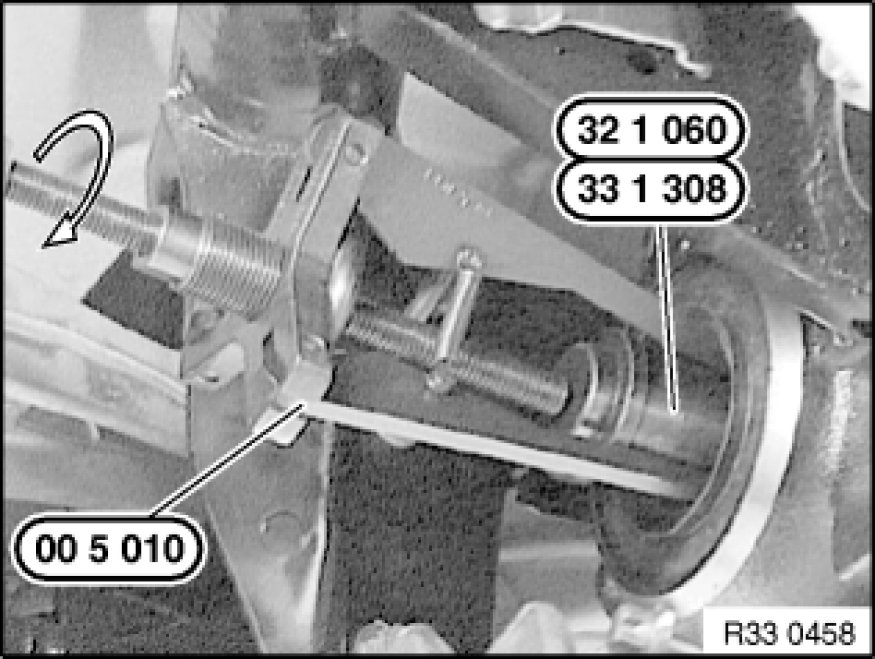
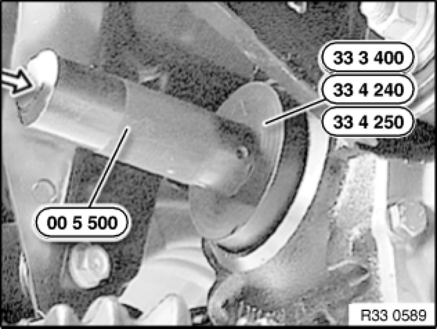

Replacing Shaft Seal for Left Drive Flange
33 11 140 - Replacing shaft seal for left drive flange

Special tools required:
- 00 5 010 00 5 010 Universal Puller
- 00 5 500 00 5 500 Handle for Drifts
- 32 1 060 32 1 060 Drift
- 33 1 308 33 1 300 Rillex Tapered Roller Bearing Extractor
- 33 3 400 33 3 400 Drift
- 33 4 240 33 4 240 Drift
- 33 4 250 33 4 250 Drift

Necessary preliminary tasks:
- Remove drive flange from rear differential
- If necessary, press off dust cover

Withdraw shaft seal with special tools 00 5 010 00 5 010 Universal Puller and 32 1 060 32 1 060 Drift / 33 1 308 33 1 300 Rillex Tapered Roller Bearing Extractor.

Coat housing plate flange and sealing lips of new shaft seal with approved rear differential oil.
Drive in new shaft seal as far as it will go with following special tools (depending on rear differential Application and ID /outside diameter).
00 5 500 00 5 500 Handle for Drifts + 33 3 400 33 3 400 Drift: 168K - 78x44x10
00 5 500 00 5 500 Handle for Drifts + 33 4 240 33 4 240 Drift: 188K/L - 90x44x10
00 5 500 00 5 500 Handle for Drifts + 33 4 250 33 4 250 Drift: 215L - 100x50x10
After installation:
- Correct rear differential oil level Checking/Topping Up Oil Level in Rear Differential